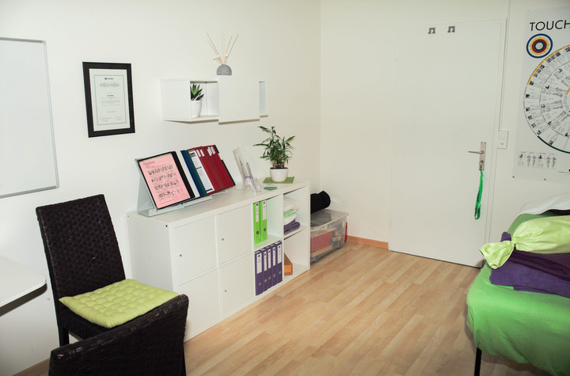
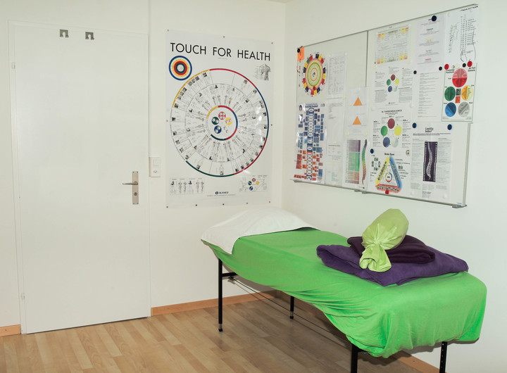

IK‑Kinesiologiepraxis und ganzheitliche Gesundheitstherapie
Adresse
Sara Haab
IK-Kinesiologiepraxis
Zürcherstrasse 73
8800
Thalwil
Tel:
079 / 710 11 12
info@ik‑kinesiologiepraxis.ch
www.ik-kinesiologiepraxis.ch
Öffnungszeiten
Termine nach telefonischer Vereinbarung.
Routenplan
Grössere Kartenansicht
Praxisraum
 